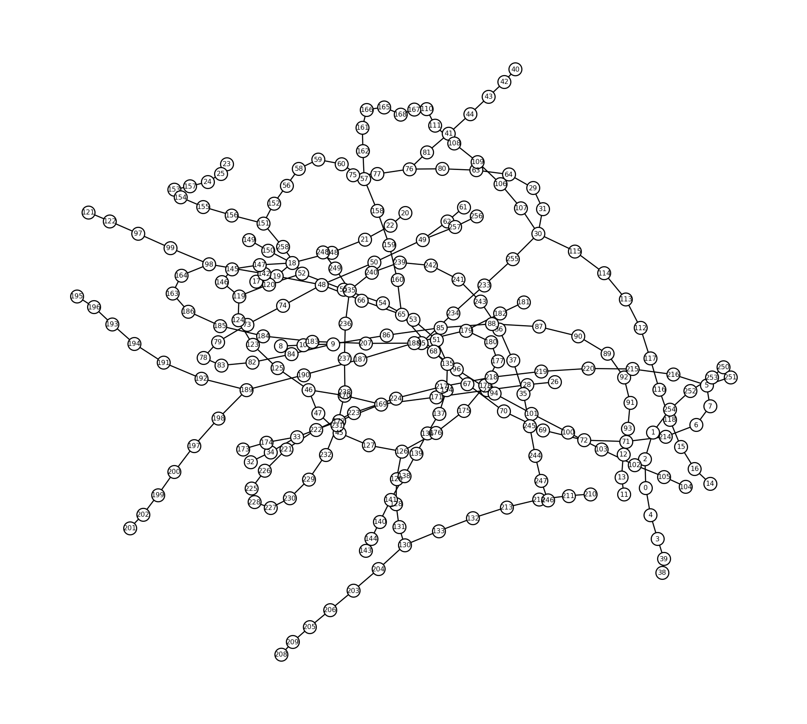

from modelskill.network import Network
network = Network.from_res1d(path_to_res1d)
network<Network>
Edges: 118
Nodes: 259
Quantities: ['WaterLevel', 'Discharge']
Time: 1994-08-07 16:35:00 - 1994-08-07 18:35:00Network support depends on libraries that are not installed by default, e.g. networkx. You can install them alongside modelskill using the networks extra:
uv pip install modelskill[networks]or
uv add modelskill[networks]A Network represents a 1D pipe or river network as a directed graph: nodes hold timeseries data (e.g. water level at a junction) and edges carry the topology and reach length between them. Break points along an edge (e.g. cross-section chainages) are supported as observation locations too.
The typical workflow is:
Network → NetworkModelResult → match() → ComparerYou can build a Network object by loading it from a supported network format.
Currently, the only supported format is mikeio.Res1D.
The quickest way to get a Network is from the path to a MIKE 1D result file:
from modelskill.network import Network
network = Network.from_res1d(path_to_res1d)
network<Network>
Edges: 118
Nodes: 259
Quantities: ['WaterLevel', 'Discharge']
Time: 1994-08-07 16:35:00 - 1994-08-07 18:35:00or a mikeio1d.Res1D that has already been opened:
from mikeio1d import Res1D
res = Res1D(path_to_res1d)
network = Network.from_res1d(res)A Res1D network contains multiple levels that are unified into a generic network structure as depicted in the image below. The image introduces concepts like find, recall and boundary which are explained in the following sections.

find()/recall() round-trip lookups.network.quantities['WaterLevel', 'Discharge']The network exposes a networkx.Graph so you can use any NetworkX algorithm or plotting function directly:
import networkx as nx
import matplotlib.pyplot as plt
fig, ax = plt.subplots(figsize=(10, 9), layout="tight")
nx.draw(network.graph, ax=ax, **plot_kwargs)
plt.show()
# Multi-index DataFrame: columns are (node, quantity)
network.to_dataframe().head()| node | 0 | 1 | 2 | 3 | 4 | 5 | 6 | 7 | 8 | 9 | ... | 249 | 250 | 251 | 252 | 253 | 254 | 255 | 256 | 257 | 258 |
|---|---|---|---|---|---|---|---|---|---|---|---|---|---|---|---|---|---|---|---|---|---|
| quantity | WaterLevel | WaterLevel | Discharge | WaterLevel | Discharge | WaterLevel | WaterLevel | Discharge | WaterLevel | WaterLevel | ... | Discharge | WaterLevel | Discharge | WaterLevel | Discharge | Discharge | Discharge | WaterLevel | Discharge | Discharge |
| time | |||||||||||||||||||||
| 1994-08-07 16:35:00.000 | 195.441498 | 194.661499 | 0.000006 | 195.931503 | 0.000004 | 193.550003 | 193.550003 | 0.000000 | 195.801498 | 195.703003 | ... | 0.000005 | 194.511505 | 0.000013 | 194.581497 | 0.000003 | 0.000002 | 0.000031 | 193.779999 | 0.0 | 0.0 |
| 1994-08-07 16:36:01.870 | 195.441605 | 194.661621 | 0.000006 | 195.931595 | 0.000004 | 193.550140 | 193.550064 | 0.000008 | 195.801498 | 195.703171 | ... | 0.000005 | 194.511841 | 0.000010 | 194.581497 | 0.000003 | 0.000002 | 0.000031 | 188.479996 | 0.0 | 0.0 |
| 1994-08-07 16:37:07.560 | 195.441620 | 194.661728 | 0.000006 | 195.931625 | 0.000004 | 193.550232 | 193.550156 | 0.000016 | 195.801498 | 195.703400 | ... | 0.000005 | 194.511795 | 0.000010 | 194.581497 | 0.000003 | 0.000002 | 0.000033 | 188.479996 | 0.0 | 0.0 |
| 1994-08-07 16:38:55.828 | 195.441605 | 194.661926 | 0.000006 | 195.931656 | 0.000004 | 193.550369 | 193.550308 | 0.000022 | 195.801498 | 195.703690 | ... | 0.000005 | 194.511581 | 0.000009 | 194.581497 | 0.000003 | 0.000002 | 0.000037 | 188.479996 | 0.0 | 0.0 |
| 1994-08-07 16:39:55.828 | 195.441605 | 194.661972 | 0.000006 | 195.931656 | 0.000004 | 193.550430 | 193.550369 | 0.000024 | 195.801498 | 195.703827 | ... | 0.000005 | 194.511505 | 0.000009 | 194.581497 | 0.000003 | 0.000002 | 0.000039 | 188.479996 | 0.0 | 0.0 |
5 rows × 259 columns
# Select a single quantity
network.to_dataframe(sel="WaterLevel").head()| node | 0 | 1 | 3 | 5 | 6 | 8 | 9 | 11 | 12 | 14 | ... | 235 | 237 | 239 | 241 | 244 | 246 | 248 | 250 | 252 | 256 |
|---|---|---|---|---|---|---|---|---|---|---|---|---|---|---|---|---|---|---|---|---|---|
| time | |||||||||||||||||||||
| 1994-08-07 16:35:00.000 | 195.441498 | 194.661499 | 195.931503 | 193.550003 | 193.550003 | 195.801498 | 195.703003 | 197.072006 | 196.962006 | 197.351501 | ... | 196.272995 | 196.113007 | 196.322006 | 196.401993 | 196.851501 | 196.891495 | 196.601501 | 194.511505 | 194.581497 | 193.779999 |
| 1994-08-07 16:36:01.870 | 195.441605 | 194.661621 | 195.931595 | 193.550140 | 193.550064 | 195.801498 | 195.703171 | 197.072006 | 196.962051 | 197.351501 | ... | 196.272995 | 196.113007 | 196.322037 | 196.402023 | 196.851501 | 196.891495 | 196.601501 | 194.511841 | 194.581497 | 188.479996 |
| 1994-08-07 16:37:07.560 | 195.441620 | 194.661728 | 195.931625 | 193.550232 | 193.550156 | 195.801498 | 195.703400 | 197.072006 | 196.962082 | 197.351501 | ... | 196.272995 | 196.113007 | 196.322052 | 196.402039 | 196.851501 | 196.891495 | 196.601501 | 194.511795 | 194.581497 | 188.479996 |
| 1994-08-07 16:38:55.828 | 195.441605 | 194.661926 | 195.931656 | 193.550369 | 193.550308 | 195.801498 | 195.703690 | 197.072006 | 196.962112 | 197.351501 | ... | 196.272995 | 196.113007 | 196.322067 | 196.402069 | 196.851501 | 196.891495 | 196.601501 | 194.511581 | 194.581497 | 188.479996 |
| 1994-08-07 16:39:55.828 | 195.441605 | 194.661972 | 195.931656 | 193.550430 | 193.550369 | 195.801498 | 195.703827 | 197.072006 | 196.962128 | 197.351501 | ... | 196.272995 | 196.113007 | 196.322067 | 196.402069 | 196.851501 | 196.891495 | 196.601501 | 194.511505 | 194.581497 | 188.479996 |
5 rows × 130 columns
After construction, nodes are re-labelled as integers. Use find() to go from original coordinates to the integer ID and recall() to go back.
# Look up a named node by its original id
node_id = network.find(node="117")
print(f"Node '117' → integer id {node_id}")
# Recover the original label
print(network.recall(node_id))Node '117' → integer id 51
{'node': '117'}# Look up a break point by reach + chainage
bp_id = network.find(edge="94l1", distance=21.285)
print(f"Break point (94l1, 21.285) → integer id {bp_id}")
print(network.recall(bp_id))Break point (94l1, 21.285) → integer id 245
{'edge': '94l1', 'distance': 21.2852238539205}# Node batch lookup
ids = network.find(node=["20", "113", "38"])
print(ids)[76, 40, 15]# Edge lookup
ids = network.find(edge="58l1", distance="start")
print(ids)
ids = network.find(edge="58l1", distance=[51.456, 77.185])
print(ids)
ids = network.find(edge="58l1", distance=["start", 77.185])
print(ids)57
[159, 160]
[57, 160]import modelskill as ms
from modelskill.model.network import NetworkModelResult
mr = NetworkModelResult(network, name="MyModel", item="WaterLevel")
mr<NetworkModelResult>: MyModelNodeObservation accepts a file path directly; the observation name is taken from the filename.
obs_1 = ms.NodeObservation(path_to_sensor_data_1, node=network.find(node="78"))
obs_2 = ms.NodeObservation(path_to_sensor_data_2, node=network.find(node="46"))
cc = ms.match(obs=[obs_1, obs_2], mod=mr)
cc.skill()| n | bias | rmse | urmse | mae | cc | si | r2 | |
|---|---|---|---|---|---|---|---|---|
| observation | ||||||||
| network_sensor_1 | 109 | 0.700685 | 0.810246 | 0.406865 | 0.724734 | 0.726882 | 0.002095 | -2.245889 |
| network_sensor_2 | 80 | 0.430548 | 0.462543 | 0.169040 | 0.431153 | 0.550352 | 0.000873 | -4.548691 |
In case you have your network data in a format that is not included in Building a Network, you can assemble a Network object by subclassing the abstract base classes NetworkNode and NetworkEdge.
NetworkNode requires three properties: id, data, and boundary. NetworkEdge requires five: id, start, end, length, and breakpoints.
The following is a simple implementation example:
import pandas as pd
import numpy as np
from typing import Any
from modelskill.network import NetworkNode, NetworkEdge, Network
class ExampleNode(NetworkNode):
"""Node backed by an in-memory DataFrame, e.g. model output."""
def __init__(self, node_id: str, data: pd.DataFrame):
self._id = node_id
self._data = data
@property
def id(self) -> str:
return self._id
@property
def data(self) -> pd.DataFrame:
return self._data
@property
def boundary(self) -> dict[str, Any]:
return {}
class ExampleEdge(NetworkEdge):
"""Edge connecting two nodes with a given length."""
def __init__(
self, edge_id: str, start: NetworkNode, end: NetworkNode, length: float,
breakpoints: list | None = None,
):
self._id = edge_id
self._start = start
self._end = end
self._length = length
self._breakpoints = breakpoints or []
@property
def id(self) -> str:
return self._id
@property
def start(self) -> NetworkNode:
return self._start
@property
def end(self) -> NetworkNode:
return self._end
@property
def length(self) -> float:
return self._length
@property
def breakpoints(self) -> list:
return self._breakpointsThe three abstract properties that every NetworkNode subclass must implement are id, data and boundary. If boundary is not relevant for your use case, define the property to return an empty dictionary, as in the example above. Similarly, a NetworkEdge with no intermediate points can return an empty breakpoints list.
from modelskill.network import Network
# df1, df2 and df3 are DataFrame objects that are loaded in memory
node_s1 = ExampleNode("sensor_1", df1)
node_s2 = ExampleNode("sensor_2", df2)
node_s3 = ExampleNode("sensor_3", df3)
edge1 = ExampleEdge("r1", node_s1, node_s2, length=500.0)
edge2 = ExampleEdge("r2", node_s2, node_s3, length=300.0)
network = Network(edges=[edge1, edge2])
network<Network>
Edges: 2
Nodes: 3
Quantities: ['WaterLevel']
Time: 1994-08-07 16:00:00 - 1994-08-07 18:59:00Break points represent intermediate chainage locations on a reach (e.g. cross-sections). Subclass EdgeBreakPoint the same way — implement id (a (edge_id, distance) tuple) and data:
from modelskill.network import EdgeBreakPoint
class ExampleBreakPoint(EdgeBreakPoint):
def __init__(self, edge_id: str, distance: float, data: pd.DataFrame):
self._id = (edge_id, distance)
self._data = data
@property
def id(self):
return self._id
@property
def data(self):
return self._data
# df4 is a DataFrame object that has been loaded in memory
bp = ExampleBreakPoint("r1", 200.0, df4)
edge1 = ExampleEdge("r1", node_s1, node_s2, length=500.0, breakpoints=[bp])
edge2 = ExampleEdge("r2", node_s2, node_s3, length=300.0)
network = Network(edges=[edge1, edge2])